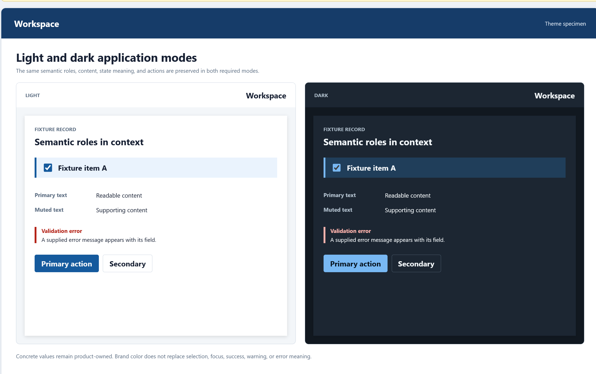
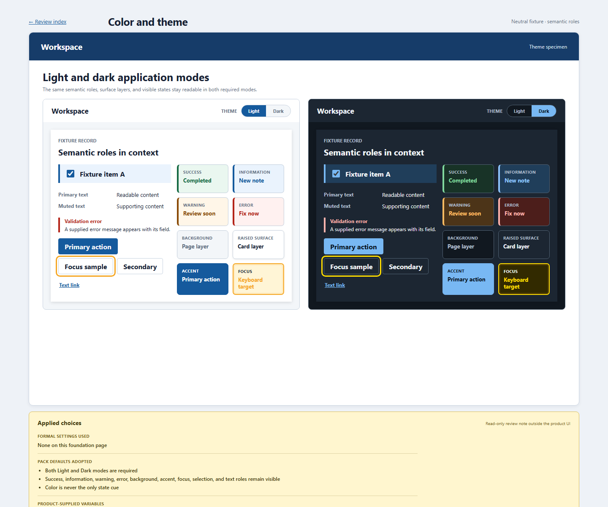

Color and theme role-coverage comparison
The Light/Dark comparison remains; the corrected specimen restores the complete semantic role inventory and returns theme selection to the header utility side.


The Light/Dark comparison remains; the corrected specimen restores the complete semantic role inventory and returns theme selection to the header utility side.

